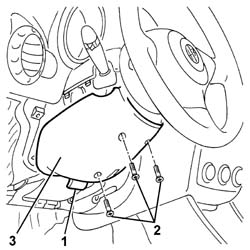
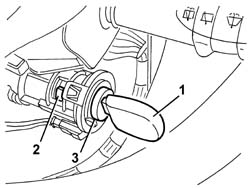
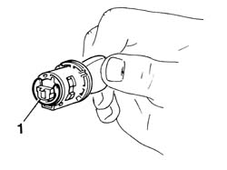
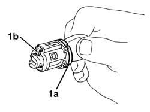
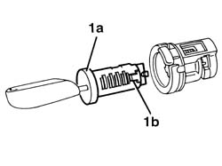
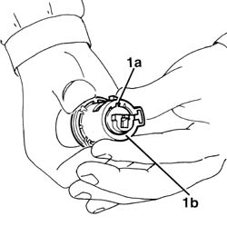

5520A14 ignition key block - r+r
- Path
- Procedures > 55 ELECTRICAL EQUIPMENT > 5520 ENGINE STARTING > 5520A ignition switch > 5520A14 ignition key block - r+r
- Kind
- repair procedure (removal / refitting; the operation number is the code)
- Applies to
- all engines; all production periods
- Interactive page
- https://sloeber94.github.io/elrnDB-a147/en/#/3025513
Applies to: all engines; all production periods
Applies to: all engines; all production periods
 Removing
Removing
 Refitting
Refitting1. If necessary, regulate the steering wheel height adjustment lever.
2. Undo the bolts fixing the lower trim.
3. Remove the lower trim, releasing it from the inner retainers and the steering wheel.

Applies to: all engines; all production periods
1. Insert the ignition key in the lock barrel and turn to the ON position.
2. Using a screwdriver, insert the retaining tooth.
3. Remove the lock barrel.

Applies to: all engines; all production periods
1. Remove the retaining ring at the rear of the ignition lock barrel.

Applies to: all engines; all production periods
1. Press the parking lights lever (1a) and turn the key until the pin (1b) is positioned in the special slit.

Applies to: all engines; all production periods
1. Partly extract the key from the lock barrel to allow the lock (1a) to move down and pass through the special slit, then extract the lock barrel (1b).

Applies to: all engines; all production periods
Refitting
Removing1. Fully insert the key in the lock barrel. Partly extract the key from the lock barrel to allow the lock (1a) to move down and the complete lock barrel to engage in the special housing (1b).

Applies to: all engines; all production periods
Fit the circlip at the rear of the ignition lock barrel.
Turn the ignition key to the ON position.
Insert the barrel in the ignition and ensure that the retaining tooth is engaged.
Test the operation of the lock barrel (electrical equipment and steering lock).
Extract the ignition key.
Refit the lower half casing fixing it using the bolts.